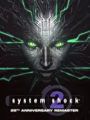

 |
|
| Tiempo de juego | 26s |
| Última actividad | 11/11/2025 10:26:26 |
| Añadido | 13/9/2025 20:48:42 |
| Modificado | 3/12/2025 11:55:28 |
| Estado de finalización | Jugado |
| Librería | Playnite |
| Fuente | |
| Plataforma | PC (Windows) |
| Fecha de lanzamiento | 26/6/2025 |
| Puntuación de la Comunidad | |
| Puntuación de la Crítica | 88 |
| Puntuación de usuario | |
| Género | Adventure Puzzle Role-playing (RPG) Shooter |
| Desarrollador | Nightdive Studios |
| Editor | Nightdive Studios |
| Característica | Co-Operative Multiplayer Single Player |
| Enlaces | Steam |
| Tag | Texto en Español Voz en Inglés |
Si el primer System Shock fue el prototipo, la secuela fue la obra maestra absoluta del terror espacial y el RPG en primera persona. Te despertás en la nave Von Braun con amnesia y un implante cibernético en la cabeza. La tripulación está muerta o transformada en "los Muchos", unas abominaciones que te susurran cosas horribles en los pasillos oscuros. Es uno de los juegos más opresivos, solitarios y claustrofóbicos que se han hecho jamás.
Esto no es un shooter, es un simulador de supervivencia y paranoia. Elegís una carrera (Marine, Técnico o Agente Psiónico) y tenés que rebuscar en cada puto cajón para encontrar una bala o un parche para curarte. Las armas se traban y se rompen, los recursos son casi nulos y cada enemigo es un problema muy serio. Es un RPG que te hace sentir vulnerable de verdad.
Y no estás solo del todo. Una doctora, Polito, te contacta y parece ser tu única esperanza. Pero mientras la ayudás, otra voz, una inteligencia artificial fragmentada y megalómana llamada SHODAN, se burla de vos. El juego te mete en una tensión psicológica constante, sin saber en quién carajo podés confiar. La narrativa, contada a través de los audio logs de la tripulación muerta, es simplemente magistral.
System Shock 2 es el padre espiritual de BioShock y una de las cumbres del diseño de videojuegos. Es difícil, es terrorífico y es brillante. Una pieza de historia que sigue siendo tan impactante hoy como en su día.